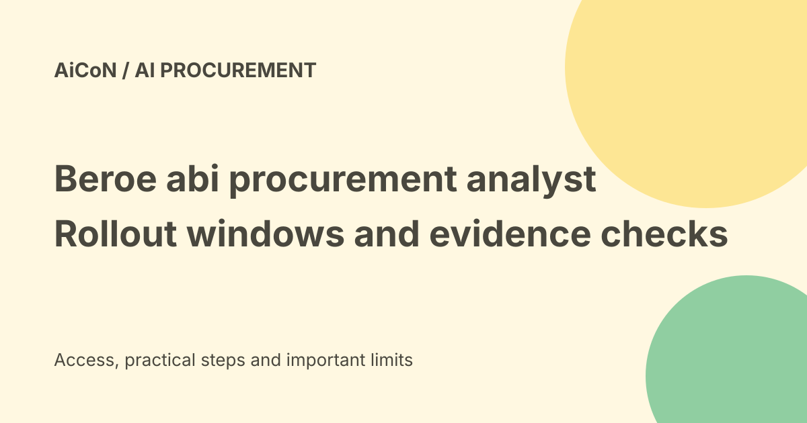

Beroe abi: procurement intelligence, rollout dates and expert checks
Beroe announced a rebuilt conversation-first procurement analyst called Beroe abi on 23 September 2026. The release schedules early-adopter access from mid-November and phased Live.ai upgrades from January 2027. An older Abi assistant page should not be mistaken for proof that the whole rebuilt platform is generally available now.

What is procurement intelligence?
Procurement teams decide what to buy, from whom and under what terms. They use information about supply, costs, prices and supplier risk to make those decisions.
Beroe abi is described as a conversational way to combine that information. A team can ask a sourcing question in ordinary language instead of searching several reports separately.
The six domains
The current product page describes category, supplier, commodity, cost, macro and risk intelligence.
Category information helps understand a market. Supplier intelligence helps compare businesses. Commodity information covers material price trends. Cost analysis examines what sits behind a quote. Macro information concerns wider economic conditions. Risk information adds possible disruptions and exposure.
One answer is not one infallible conclusion
The release says abi combines the relevant domains into an answer, keeping sources and methodology visible. Where Beroe lacks category coverage, users can choose a web search through its procurement approach.
Curated intelligence and web results have different evidence quality. Check what source supports each important number, the date, region, currency and assumptions before using it in a negotiation.
Human validation
Beroe describes routing questions to analysts and industry experts when more validation is needed. Human-in-the-loop means people help check or deepen an AI result.
That is useful for decisions with financial or supplier consequences. Ask whether expert input is included in the plan, who reviews the answer and what service limits apply.
Vendor data-scale claims
The release cites more than thirty million validated data points, hundreds of licensed data sources and a large human expert network.
Those are Beroe claims, not figures independently audited for this guide. A large dataset does not by itself prove an answer is current for a particular Indian supplier or local cost structure.
New analyst versus older Abi assistant
The older /abi/ page describes an assistant within Live.ai and collaboration-tool integrations, along with past usage figures. The September announcement describes a full rebuild of the core platform.
Both can be true for different product stages. Do not assume that earlier assistant access includes every new analyst capability or that a promotional page overrides the dated rollout schedule.
Rollout dates
The announcement gives mid-November 2026 for early adopters and January 2027 for phased upgrades of existing Live.ai customers.
Mid-November is a window, not an exact appointment or guarantee for every account. As of 7 October, both periods remain ahead. Confirm actual eligibility and account access with Beroe.
Price and free-versus-paid verdict
No exact subscription price, free consumer plan or included expert-review quota was established in the checked pages.
This is software for procurement teams rather than a verified free personal shopping assistant. Get a written offer explaining users, categories, data, expert help, renewal and usage limits before agreeing.
India fit
An Indian team should check coverage of its categories, domestic suppliers, currency, duties, taxes and market-specific risks. A global estimate can be misleading when applied to a local sourcing decision.
The sources do not establish a universal India price or guaranteed coverage for every Kerala business. No subscription, demo or supplier request was started here.
Private sourcing data
Questions can reveal budgets, supplier relationships and negotiation plans. Before entering confidential information, inspect the actual contract, data policy, provider access and retention settings.
An older page's privacy promise is not an independent security assessment or a substitute for terms covering the rebuilt platform. Limit data to what the trial needs.
A practical evaluation
- Choose one category and a question with a known baseline.
- Confirm the specific product and access window.
- Check coverage, source dates and units.
- Separate curated evidence from optional web research.
- Use expert validation for consequential gaps.
- Compare recommendations with your own supplier evidence.
- Measure answer quality and review time.
- Read the final plan and data terms before adoption.
Do not authorize a supplier change or purchase just because an AI answer recommends it.
What changed since the original post?
We distinguish the legacy Abi assistant from the rebuilt analyst, preserve the November/January rollout windows and explain visible-source versus human-validation limits. Exact pricing remains unverified, not guessed.
Frequently asked questions
Is general access confirmed today?
The dated release schedules later early access.
Does the older Abi page contradict that?
It describes an earlier assistant within Live.ai, not necessarily the entire rebuild.
Are supplier recommendations guaranteed?
No. Review sources, local fit and expert input.
Sources: Current rebuilt analyst product page · Beroe issuer release with rollout dates · Older Abi assistant page for product-stage comparison. Checked 7 October 2026.